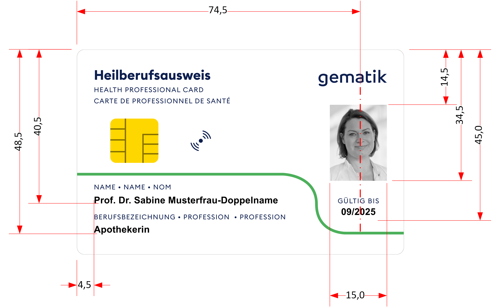

Elektronische Gesundheitskarte und Telematikinfrastruktur
Spezifikation
Optische Gestaltung
des von der gematik
herausgegebenen HBA
| Version | 2.1.0 |
| Revision | 571916 |
| Stand | 12.08.2021 |
| Status | freigegeben |
| Klassifizierung | öffentlich |
| Referenzierung | gemSpec_gematikHBA_Opt |
Änderungen zur Vorversion
Die Erstversion wurde als Grundlage für eine Ausschreibung erstellt. Die vorliegende Fassung wurde auf Basis der Abstimmungen mit dem Auftragnehmer erstellt. Änderungen betreffen das Layout der Vorder- und Rückseite der Karte.
Die vorliegende Fassung 2.1.0 unterscheidet sich von der Vorversion 2.0.0 in folgenden Punkten:
Dokumentenhistorie
| Version |
Stand |
Kap./ Seite |
Grund der Änderung, besondere Hinweise |
Bearbeitung |
|---|---|---|---|---|
| 1.0.0 | 20.11.20 | initiale Version des Dokuments | gematik | |
| 2.0.0 | 22.04.21 | Anpassungen am Layout, Vorder- und Rückseite der Karte, Ausweisnummer auf der Rückseite der Karte | gematik | |
| 2.1.0 | 12.08.21 | Änderungen QR-Code, Position Ausweisnummer, Position CAN | gematik |
Die vorliegende Spezifikation definiert Anforderungen an die äußere Gestaltung, also das Layout der Vorder- und Rückseite, eines Heilberufsausweises, der von der gematik herausgegeben wird. Dazu zählt insbesondere auch die optische Personalisierung.
Das Dokument ist maßgeblich für Hersteller von Karten und dort insbesondere für diejenigen, welche sich mit dem Layout und der optischen Personalisierung eines Kartenkörpers befassen.
Dieses Dokument enthält normative Festlegungen zur Telematikinfrastruktur des deutschen Gesundheitswesens. Der Gültigkeitszeitraum der vorliegenden Version und deren Anwendung in Zulassungs- oder Abnahmeverfahren wird durch die gematik GmbH in gesonderten Dokumenten (z.B. Dokumentenlandkarte, Produkttypsteckbrief, Leistungsbeschreibung) festgelegt und bekannt gegeben.
Wichtiger Schutzrechts-/Patentrechtshinweis
Die nachfolgende Spezifikation ist von der gematik allein unter technischen Gesichtspunkten erstellt worden. Im Einzelfall kann nicht ausgeschlossen werden, dass die Implementierung der Spezifikation in technische Schutzrechte Dritter eingreift. Es ist allein Sache des Anbieters oder Herstellers, durch geeignete Maßnahmen dafür Sorge zu tragen, dass von ihm aufgrund der Spezifikation angebotene Produkte und/oder Leistungen nicht gegen Schutzrechte Dritter verstoßen und sich ggf. die erforderlichen Erlaubnisse/Lizenzen von den betroffenen Schutzrechtsinhabern einzuholen. Die gematik GmbH übernimmt insofern keinerlei Gewährleistungen.
Dieses Dokument spezifiziert die äußere Gestaltung und die optische Personalisierung. Explizit nicht in diesem Dokument spezifiziert werden die elektrische Personalisierung (siehe [gemSpec_HBA_ObjSys_G2.1]), sowie die physikalischen Eigenschaften des Kartenkörpers.
Anforderungen als Ausdruck normativer Festlegungen werden durch eine eindeutige ID sowie die dem RFC 2119 [RFC2119] entsprechenden, in Großbuchstaben geschriebenen deutschen Schlüsselworte MUSS, DARF NICHT, SOLL, SOLL NICHT, KANN gekennzeichnet.
Sie werden im Dokument wie folgt dargestellt:
<AFO-ID> - <Titel der Afo>
Text / Beschreibung
[<=]
Dabei umfasst die Anforderung sämtliche zwischen Afo-ID und der Textmarke [<=] angeführten Inhalte.
Hinweis: Die normativen Eigenschaften des Kartenkörpers werden an anderer Stelle beschrieben.
Das in den Abbildungen L_100 und L_300 gezeigte Layout wird von der gematik als Druckvorlage im eps-Format zur Verfügung gestellt. Bei Bedarf ist es möglich, die Druckvorlage in weiteren Formaten bereitzustellen.
A_21033
Der Personalisierer des von der gematik GmbH herausgegebenen HBA MUSS für die optische Personalisierung der Texte folgende Dinge beachten:
Abbildung 1: L_100, exemplarische Kartenvorderseite
Abbildung L_100 zeigt exemplarisch die Gestaltung der Kartenvorderseite. Diese besteht aus einer Druckvorlage mit den unveränderlichen Elementen, sowie den personalisierten Daten.
Zur besseren Übersicht folgt eine Liste der zu personalisierenden Daten für die Vorderseite der Karte:

Abbildung 2: L_200, Position personalisierter Daten auf der Kartenvorderseite
Hinweis: In Abbildung L_200 ist der Abstand des Ablaufdatums (siehe A_21041) von der Kartenoberkante geringer als spezifiziert. Diesbezüglich gilt die in Abbildung L_200 angegebene Bemaßung und nicht die Position des beispielhaften Textes.
A_21034
Der Personalisierer des von der gematik GmbH herausgegebenen HBA MUSS dafür sorgen, dass für die Positionierung der zu personalisierten Daten die Bemaßung in Abbildung L_200 verwendet und eine Toleranz von ±0,5 mm eingehalten wird. <=
A_21035
Der Personalisierer des von der gematik GmbH herausgegebenen HBA MUSS aus Qualitätsgründen Texte der Kartenvorderseite mit einem der folgenden Verfahren personalisieren lassen:
A_21036
Der Personalisierer des von der gematik GmbH herausgegebenen HBA MUSS für die optische Personalisierung der Texte auf der Kartenvorderseite folgendes beachten:
Als verbindliches Merkmal für die Zuordnung des Ausweises wird ein Lichtbild des Karteninhabers aufgebracht.
A_21038
Der Personalisierer des von der gematik GmbH herausgegebenen HBA MUSS das Lichtbild wie folgt personalisieren lassen:
A_21039
Der Personalisierer des von der gematik GmbH herausgegebenen HBA MUSS den Namen des Karteninhabers wie folgt aufbringen lassen:
A_21040
Der Personalisierer des von der gematik GmbH herausgegebenen HBA MUSS die Berufsbezeichnung an der in Abbildung L_200 gezeigten Position aufbringen lassen. <=
A_21041
Der Personalisierer des von der gematik GmbH herausgegebenen HBA MUSS das Ablaufdatum des Ausweises wie folgt aufdrucken lassen:
Hinweis: Läuft der Ausweis beispielsweise am 31. Mai 2024 ab, so ist als Ablaufdatum aufzudrucken: 05/2024.
Abbildung 3: L_300, exemplarische Kartenrückseite
Abbildung L_300 zeigt exemplarisch die Gestaltung der Kartenrückseite. Diese besteht aus einer Druckvorlage mit den unveränderlichen Elementen, dem Unterschriftenfeld sowie den personalisierten Daten.
Zur besseren Übersicht folgt eine Liste der zu personalisierenden Daten für die Rückseite der Karte:
Abbildung 4: L_400, Position personalisierter Daten auf der Kartenrückseite
A_21042
Der Personalisierer des von der gematik GmbH herausgegebenen HBA MUSS das Unterschriftenfeld wie in Abbildung L_400 gezeigt mit einer Toleranz von ±0,5 mm positionieren und darüber hinaus wie folgt aufbringen lassen:
A_21562
Der Personalisierer des von der gematik GmbH herausgegebenen HBA MUSS dafür sorgen, dass für die Positionierung der Personalisierungsdaten die Bemaßung in Abbildung L_400 verwendet und eine Toleranz von ±0,5 mm eingehalten wird. <=
A_21043
Der Personalisierer des von der gematik GmbH herausgegebenen HBA MUSS aus Qualitätsgründen Artefakte der Kartenrückseite mit einem der folgenden Verfahren personalisieren lassen:
A_21561
Der Personalisierer des von der gematik GmbH herausgegebenen HBA MUSS für die optische Personalisierung der Texte auf der Kartenrückseite folgendes beachten, sofern nicht anders angegeben:
A_21471-01
Der Personalisierer des von der gematik GmbH herausgegebenen HBA MUSS die CAN wie in Abbildung L_400 gezeigt folgendermaßen aufbringen lassen:
A_21564-01
Der Personalisierer des von der gematik GmbH herausgegebenen HBA MUSS die Ausweisnummer wie in Abbildung L_400 gezeigt positionieren und darüber hinaus wie folgt aufbringen:
Beispiel: Für die Ziffernfolge ICCSN= 80276678901234567890 zeigt Abbildung L_500 einen zugehörigen QR-Code.
Abbildung 5: L_500, QR-Code zur ICCSN-Ziffernfolge 80276678901234567890
Hinweis: Das EF.GDO enthält ein TLV-codiertes Datenobjekt mit der ICCSN (Seriennummer) der Smartcard, beispielsweise '5A0A12345678901234567890' (in hexadezimaler Schreibweise). Das erste Byte 0x5A ist das Tag des TLV-Datenobjekts (vergleiche [7816-6] PAN). Es folgt die Längencodierung 0x0A = 10 Oktett. Das Wertfeld enthält die ICCSN, hier 12345678901234567890.
Hinweis: Der Wert der ICCSN im Beispiel des vorherigen Hinweises ist gemäß [gemSpec_Karten_Fach_TIP_G2.1] Card-G2-A_3498 ungültig, da er nicht mit 80276 beginnt.
Hinweis: Für den Fehlerkorrektur-Level wurde absichtlich "Q" gewählt. Das ist die höchste Stufe, die noch zu einer "Version 1" des QR-Codes führt, wenn 20 Ziffern in den QR-Code eingestellt werden.
| Kürzel |
Erläuterung |
|---|---|
| CAN | Card Access Number, Kartenzugangsnummer |
| EF.GDO | Elementary File Global Data Object, Datei einer Smartcard mit allgemeinen Informationen, etwa ICCSN |
| ICCSN | Integrated Chip Card Serial Number, Seriennummer einer Smartcard |
| Begriff |
Erläuterung |
|---|---|
| -/- | -/- |
Das Glossar wird als eigenständiges Dokument (vgl. [gemGlossar]) zur Verfügung gestellt.
Die nachfolgende Tabelle enthält die Bezeichnung der in dem vorliegenden Dokument referenzierten Dokumente der gematik zur Telematikinfrastruktur. Der mit der vorliegenden Version korrelierende Entwicklungsstand dieser Konzepte und Spezifikationen wird pro Release in einer Dokumentenlandkarte definiert; Version und Stand der referenzierten Dokumente sind daher in der nachfolgenden Tabelle nicht aufgeführt. Deren zu diesem Dokument jeweils gültige Versionsnummern sind in der aktuellen, von der gematik veröffentlichten Dokumentenlandkarte enthalten, in der die vorliegende Version aufgeführt wird.
| [Quelle] |
Herausgeber: Titel |
|---|---|
| [gemGlossar] | gematik: Glossar der Telematikinfrastruktur |
| [gemSpec_HBA_ObjSys_G2.1] | Spezifikation des elektronischen Heilberufsausweises, HBA-Objektsystem |
| [gemSpec_Karten_Fach_TIP_G2.1] | Befüllvorschriften für die Plattformanteile der Karten der TI der Generation G2.1 |
| [Quelle] |
Herausgeber (Erscheinungsdatum): Titel |
|---|---|
| [7816-6] | ISO/IEC 7816 Identification card — Integrated circuit cards. Part 6: Interindustry data elements for interchange, Jun. 2016. |
| [8859-15:1999] | ISO/IEC 8859 series, Information technology — 8-bit single-byte coded graphic character sets. Part 15: Latin alphaber No. 9, März 1999. |
| [18004] | ISO/IEC 18004:2015, Information technology — Automatic identification and data capture techniques — QR Code bar code symbology specification |
| [RFC 2119] | Key words for use in RFCs to Indicate Requirement Levels. Scott Bradner, DOI 10.17487/RFC2119, Mar. 1997. http://tools.ietf.org/html/rfc2119 |
| Kapitel |
Offener Punkt |
Zuständig |
|---|---|---|
| -/- | -/- | -/- |